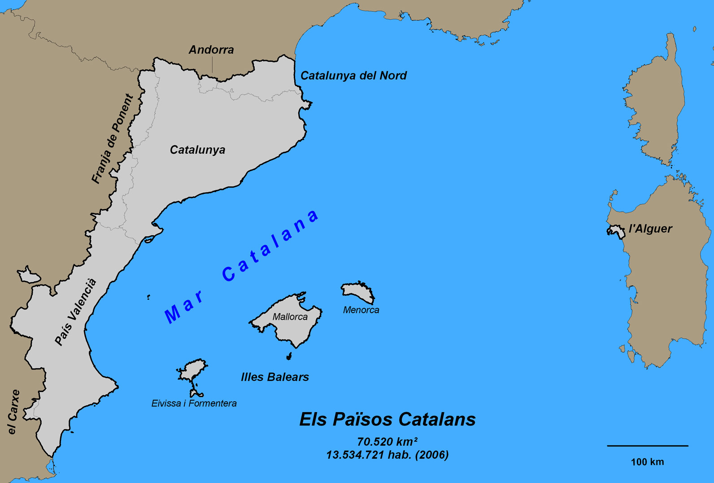

The Catalan Language
The Romance Lanugage with Broad Roots
Catalan is a romance language named after its obvious origins in the Catalan region of Spain. It evolved from a form Vulgar Latin found in the eastern part of the Pyrenees in the 9th century. It is an interesting language in that, while it shares many similarities to the romance languages found in neighboring countries, it differs in a few key points from each. While it shares similarities to Spanish and Portuguese, the other Iberian romance languages, it differs primarily in terms of its vocabulary. Interestingly enough while it’s also fairly similar to French, it differs in grammar. Effectively saying that much of its vocabulary comes from similar linguistic trees as French while its Grammar structures come primarily from those of Spanish and Portuguese.
Traditionally, romance languages follow a certain inflectional grammar pattern that distinguishes between masculine and feminine nouns. For example, in typical Castellano Spanish masculine nouns end with an “o” sound while feminine nouns end with an “a” sound. However, Catalan has some significant differences from its other related romance languages in this regard. While Catalan does have that inflective noun patterns and even specific verb conjugations, it differs in terms of pronunciation. Because it has so many words ending in a variety of consonants and combinations of consonance, many of the words are pronounced significantly differently than many other romance languages.
It’s an incredibly interesting language that differs from its neighboring countries but is also extremely relatable to them. Starting in the north in the Pyrenees lies the country of Andorra where Catalan is the only and official language because of its similarities to both Spanish and French, the countries in which it borders. Even farther north, in the region of France called Northern Catalonia, Catalan is also spoken due to the similarities again between Catalan and French. It also has colonial ties to a port City l’Alguer in Sardinia, Italy where the similarities between Catalan and Italian as well foster its growth there. It is even present in other Spanish regions, Valencia, Aragon, the Balearic Islands, all regions that share borders both officially and historically with Catalunya and the spread of Catalan regionalism.
Previous: LanguageNext: the Power of DialectMap: Courtesy of Wikimedia Commons